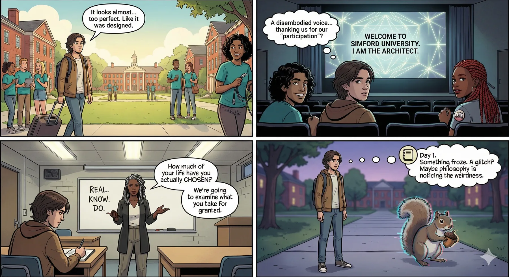

1. Welcome to Simford

Alex Chen dragged a rolling suitcase across the quad, dodging orientation volunteers in matching teal shirts. Simford University looked exactly like the brochure: red brick, old trees, students laughing on blankets in the grass. It looked, Alex thought, almost too perfect—like someone had designed it to feel like college.
"You're in Whitman Hall, right?" A volunteer appeared at Alex's elbow, already pointing. "Straight ahead, second building. Your roommate's already there."
The room was small but bright. A figure sat cross-legged on the left bed, surrounded by cables and a half-assembled computer tower.
"Hey. Jordan." They didn't look up from the motherboard. "I took this side. Hope that's cool."
"Alex. And yeah, fine."
Jordan finally glanced over, pushing back a mess of dark curls. "You going to the orientation thing? The big welcome session?"
"Is it mandatory?"
"Technically. Something about a 'message from the Architect.' Capital A. Sounds very cult-y." Jordan grinned. "I'm into it."
The auditorium was packed. Alex found a seat near the middle, next to a girl with bright red box braids and a "JUSTICE IS NOT A METAPHOR" button pinned to her jacket. She nodded. "Maya."
"Alex."
On Alex's other side, a guy in a campus ministry t-shirt was saving a seat. "I'm Sam," he said, then waved to someone in the aisle. "My friend's coming—oh, never mind, she found another spot."
The lights dimmed. A massive screen descended, and the Simford logo dissolved into something else: a clean, geometric pattern, slowly rotating.
A voice filled the room. It was calm, measured, and impossible to place—not quite male, not quite female, not quite human.
"Welcome to Simford University. I am the Architect."
A few students laughed nervously. Alex didn't.
"This environment has been carefully designed to maximize your learning and growth. Every resource has been calibrated to support your development. Every choice you make contributes to the ongoing refinement of this system."
The geometric pattern pulsed gently.
"During your time here, you will be challenged. You will question. You will grow. This is by design. We thank you for your participation."
The screen went dark. The lights came up. A dean in a navy blazer walked to the podium, smiling.
"Wasn't that fun? Our media department outdid themselves this year. Now, let's talk about meal plans."
Jordan leaned over to Alex. "Did that seem weird to you?"
"The whole thing?"
"The part where a disembodied voice thanked us for our 'participation.' Like we're lab rats."
Maya snorted. "We are lab rats. That's college."
They laughed. Alex laughed too. But something about the voice stayed—the way it said designed, like it meant it.
The next morning, Alex found Intro to Reality Studies in a basement classroom with fluorescent lighting and mismatched chairs. The professor was already there: a Black woman in her forties with silver-streaked locs and an expression that suggested she found everything slightly amusing.
"I'm Professor Reyes," she said, once the seats filled. "This course has a strange name because it asks strange questions. What is real? How do you know? What should you do about it?" She wrote three words on the board: REAL. KNOW. DO.
"Philosophy is not a set of answers. It's a set of skills for living with hard questions. Socrates said the unexamined life is not worth living. That might sound dramatic. But think about it: how much of your life have you actually chosen, versus just... absorbed? How many of your beliefs have you actually tested?"
Alex thought about the orientation video. The voice. The word designed.
"This semester," Reyes continued, "we're going to examine things you take for granted. Fair warning: some of you will find it uncomfortable. That discomfort is the point. If you're never uncomfortable, you're probably not learning."
She smiled. "Now. Let's talk about Socrates and why Athens killed him for asking too many questions."
That evening, Alex walked back to Whitman Hall as the sun turned the brick buildings orange. The campus was quiet—that strange lull between orientation and real classes.
A squirrel sat on the path ahead, frozen mid-chew, an acorn in its paws.
Alex stopped. The squirrel didn't move. Didn't blink. Didn't breathe.
For three seconds—maybe four—it was a statue. A photograph. A glitch in a video that hadn't buffered.
Then it twitched, stuffed the acorn in its cheek, and scurried up a tree like nothing had happened.
Alex stood there, heart beating faster than it should.
It was nothing, Alex thought. A trick of the light. You're tired. You're stressed.
But back in the dorm room, after Jordan had fallen asleep, Alex pulled out a notebook—the one meant for class notes—and wrote on the first page:
Day 1. Something froze. Probably nothing.
Prof. Reyes asked how much of my life I've actually examined. Honest answer: almost none.
Maybe this is what philosophy is. Noticing the weirdness instead of ignoring it.